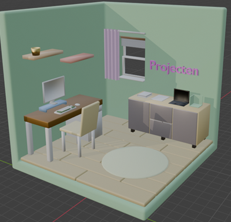
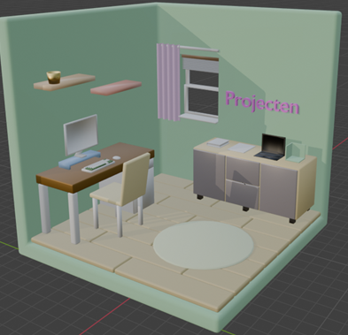

Project X
Coach:
Guido Segers
Project overview:
In dit persoonlijke project maak ik een interactieve 3D-weergave van mijn kamer, een zogenaamd roomfolio. Het wordt een online portfolio waarin gebruikers vrij kunnen navigeren en objecten kunnen aanklikken of animeren. Zo toon ik mijn vaardigheden in 3D-modellering, animatie en webontwikkeling. In het roomfolio presenteer ik ook mijn webprojecten van dit semester, met als doel dit later uit te breiden met meer werk en interactieve functies.
Inspiratie
Hier vertel ik over de inspiratie achter mijn portfolio-ontwerp en hoe ik tot mijn 3D-model kwam.
Toen ik op zoek was naar inspiratie voor mijn portfolio, ontdekte ik via Awwwards een indrukwekkende 3D-website: Sooah's Room-folio . De persoonlijke en schattige stijl en de interactieve elementen spraken mij erg aan. De tutorial op de site hielp mij bij het plannen en maken van mijn eigen 3D-model. Hiernaast in de afbeelding zie je hoe Sooah's room-folio design eruit ziet.

Onderzoek
Voor dit project heb ik eerst onderzoek gedaan naar hoe ik mijn project werkend kon krijgen. Ik heb gekeken welke tools en technieken ik kon gebruiken, zoals Three.js en Blender. Dit onderzoek heb ik vastgelegd in een document. Je kunt dit proces bekijken via de onderstaande knop.
Voorbereiding Blender
Na mijn eerste onderzoek ben ik me verder gaan verdiepen in Blender. Ik heb een tutorial gevolgd waarin ik een eigen 3D-object heb gemaakt. Je kunt dit proces bekijken via de onderstaande knop.
Voorbereiding Three.js
Vervolgens heb ik een bootcamp gevolgd over Three.js waarin ik heb geoefend met het importeren van een Blender-object, het animeren daarvan en het online zetten.
Het proces van deze voorbereiding is ook beschikbaar in een document. Daarnaast kun je met de onderstaande knop de website bekijken die ik tijdens deze voorbereiding heb gemaakt.
De functies van deze website zijn:
- Een eigen 3D-object (gemaakt tijdens de Blender-tutorial)
- Dynamische camera die meebeweegt met het licht
- Hover-animatie
- Bij klik wordt een tekst geopend
Deze functies ga ik ook gebruiken bij mijn uiteindelijke project X.
Design
Het design wou ik helemaal zelf maken met behulp van Blender. Ik begon met inspiratie zoeken op Pinterest
Inspiratie design


Schetsen
Hier leg ik mijn proces uit van eerste schets tot het vereenvoudigen van het ontwerp in Blender.

Het bouwen in Blender bleek lastiger dan gedacht. Na overleg met mijn coach besloot ik het ontwerp te vereenvoudigen en me te focussen op het interactieve prototype in plaats van het perfecte design.
Versie 1
Ik heb de grootste voorwerpen gemaakt. Alle decoratieve voorwerpen wil ik als laatste maken. Het design staat hieronder. Links zonder kleur en rechts met kleur.
 

Ik ben vooral gaan experimenteren met het maken van voorwerpen en het ontdekken van de tools. Als eerste maakte ik een kast, met simpele vormen die makkelijk te bouwen waren. Ik vind dat het er tot nu toe goed uitziet en ik ben best trots dat ik dit zelf heb gemaakt. Toch is dit niet de stijl waar ik voor wil gaan. Deze versie lijkt vrij realistisch, terwijl ik juist iets ‘schattigers’ wil maken. Ik heb ChatGPT gevraagd waarom mijn ontwerp niet zo schattig oogt als mijn inspiratie. De tip was dat mijn ontwerp realistischer is en dat de inspiratie vooral schattig lijkt door ronde vormen en onrealistische verhoudingen. Dat ga ik in mijn volgende versie proberen toe te passen.
Versie 2
Ik wou mijn design verbeteren door meer gebruik maken van onrealische meubels en objecten. Ik begon bijna helemaal opnieuw met het design. Zo ben ik weer begonnen met een schets te maken in Blender. Hieronder staat de nieuwe schets.

Zoals je kun zien heb ik de vormen groter gemaakt. Ook heb ik het raam veranderd dat die wat groter is
Uitgewerkte schets
Ik merkte al snel dat ik steeds beter met Blender kon werken. Een object maken koste steeds minder tijd. Doordat het maken sneller ging had ik meer tijd om meer objecten te maken en ze mooier te maken. De versie hieronder is nog niet mijn complete ontwerp van versie 2. Ik ben nog bezig met de stoel verder te ontwerpen. Het ontwerp staat hieronder.


Nadat ik de stoel heb aangepast ga ik het exporteren en in three.js zetten. Zodat ik kan beginnen aan de functies. Mocht ik daarna nog tijd over hebben ga ik meer decoratie maken.
Coderen
Hier leg ik mijn proces uit van het coderen.
Eindproduct versie 1
Bekijk hieronder de showcasevideo van de eerste versie van mijn eindproduct.
Testen
Ik vroeg me of het voor een gebruiker met geen kennis van 3D het duidelijk was hoe je moet navigeren. Ik heb daarom een klein testje gedaan met medestudenten. Hierbij liet ik mijn website zien en liet ze vrij om de website te verkennen. Ze ontdekte al snel dat je met linker muisknop kon roteren en je met het scrollwheel je in en uit kon zoomen.
Ze ontdekte echter niet dat je de rechter muisknop ook kan gebruiken om te navigeren. Deze resultaten heb ik verwerkt in een nieuw design. Zo heb ik een klein blokje tekst toegevoegd met de navigatie. Dit is de zien in de onderstaande video.
Eindproduct versie 2
Bekijk hieronder de showcasevideo van de laatste versie die ik heb opgeleverd voor de deadline van mijn portfolio.
Ontdek de 3D-website zelf via de knop hieronder. Benieuwd of er iets is veranderd? Kijk gerust rond!
Live websiteFeedback Josh
Ik heb Josh gevraagd voor feedback van mijn Blender model, omdat Josh expert is op het gebied van 3D en Blender. Ik vroeg namelijk of ik 'fouten' maakte die een Blender beginner maakt. Hij zei dat het niet perse fouten zijn, maar meer dingetjes waar ik in de toekomst op zou kunnen letten. Zo keek hij vooral naar de realistische dingen. Zoals dat de stoel vast komt te zitten in het laminaat en dat er geen kabels zijn van het scherm. Voor de rest was het goed. Goed gebruik gemaakt van de kleuren en over het algemeen zei hij dat ik er best trots op mag wezen.
Ik heb besloten het design niet aan te passen. Voor mij is het niet belangrijk dat het er heel realistisch uit ziet. Het designen van een realistisch 3D kamer is ook niet mijn doel. Ik ga wel deze feedback meenemen naar volgende 3D projecten.
Reflectie
Sprint X was voor mij een project waar ik met veel enthousiasme aan heb gewerkt. Ik vond het ontzettend leuk om de uitdaging aan te gaan en mezelf echt uit te dagen met iets waar ik in eerste instantie geen ervaring mee had. Ik koos bewust voor een project dat pittig zou zijn, waarbij ik zowel met Blender als Three.js aan de slag ging (twee tools waar ik nog geen kennis van had).
Toen ik het projectidee op Awwwards zag, dacht ik eerst: wat leuk, maar ook: dat zal wel heel moeilijk zijn. Toch besloot ik het niet uit de weg te gaan, maar er juist voor te kiezen om die challenge aan te gaan. Daar ben ik achteraf erg trots op. Ik vind het knap van mezelf dat ik iets heb neergezet waar ik in het begin dacht dat het misschien te moeilijk zou zijn.
Tijdens het project had ik soms wel momenten van stress, vooral omdat ik bang was dat ik het niet op tijd af zou krijgen. Het was een complex project en doordat ik met nieuwe technieken werkte, kostte het veel tijd om alles uit te zoeken en te leren. Maar juist daardoor heb ik ontzettend veel geleerd en ben ik echt gegroeid in mijn vaardigheden.
Wat ik vooral waardevol vond aan Sprint X is dat het me liet zien dat ik in staat ben om nieuwe dingen zelfstandig op te pakken en door te zetten, ook als het moeilijk is. Dit geeft me veel vertrouwen en motivatie om in de toekomst opnieuw uitdagende projecten te kiezen, omdat ik heb ervaren hoeveel je kunt bereiken als je jezelf uitdaagt.
Voor een volgend project wil ik proberen mijn tijd nog beter te verdelen, zodat ik minder stress ervaar richting de deadline. Ook zou ik eerder hulpbronnen raadplegen of mensen om advies vragen wanneer ik vastloop. Maar bovenal kijk ik met trots en voldoening terug op dit project. Het heeft me laten zien dat ik meer kan dan ik soms zelf denk.